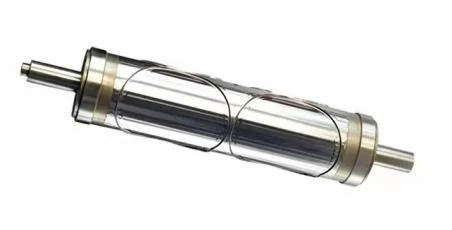
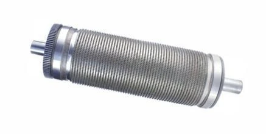
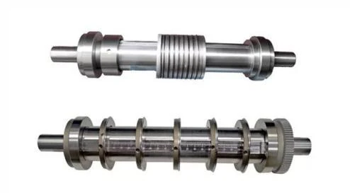
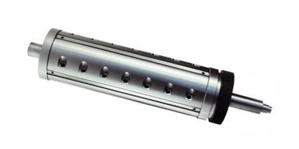
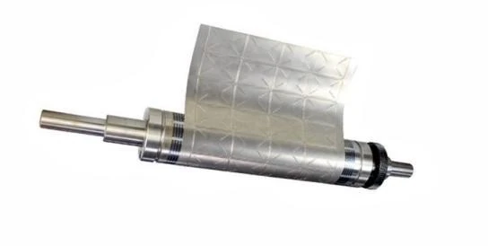
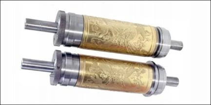

OCA 与多层胶粘材料
针对高黏、易拉丝、层间复合及洁净要求，关注切透层级、排废稳定性与边缘无溢胶表现。
- 多层材料切深控制
- 小孔与复杂轮廓排废
- 连续量产稳定性

面向高速、连续、批量模切场景，针对 OCA 光学胶、铜箔、铝箔及多层胶粘材料等特殊材料优化刀锋、排废与压力配合。
SPECIAL MATERIALS
特殊材料的黏性、延展性、层间结构和洁净要求，决定了圆刀的刀锋结构、排废方式与压力窗口。
针对高黏、易拉丝、层间复合及洁净要求，关注切透层级、排废稳定性与边缘无溢胶表现。
针对材料薄、延展性强、易变形的特点，优化刃口、间隙与支撑，减少毛刺、卷边和拉伸。
服务偏光、扩散、反射、增光、复合膜及保护膜应用，兼顾表面保护、尺寸与洁净。
根据产品轮廓、节拍及清洁要求定制整体式、顶针清废式或组合式圆刀系统。
ROTARY DIE ENGINEERING
从连续模切、同步清废到多规格分切，根据材料特性与生产节拍匹配圆刀结构。翻转卡片可查看技术参数与应用。

高硬度、高耐磨的一体式精密雕刻结构。
查看数据与案例采用高精密 CNC 一体加工，适合电子胶粘、不干胶、保护膜和 OCA 等连续模切。
OCA 光学胶多层材料连续模切，重点控制切深、溢胶、边缘与排废稳定性。

模切与排废同步，保护刀锋并提升节拍。
查看数据与案例无需外接气源、运行噪音低，减少废料积存引发的刀刃受损和模切不良。
密集小孔胶粘产品连续生产，废料随模切同步排出，降低堵孔与断刀风险。

快速调整料宽，适应多规格薄材分切。
查看数据与案例通过移动环切刀片或更换不同厚度垫片，快速改变分切规格。
薄金属卷材多规格连续分切，兼顾宽度一致性、边缘毛刺与材料防变形。

按断张节距布置刀槽，实现连续定长裁切。
查看数据与案例刀槽可对称或按指定位置布置，裁切刀片及虚线刀片均可拆卸更换。
保护膜卷材分切与定长断张同步完成，减少二次工序和重复定位。

辊体重复使用，更换刀皮即可切换产品。
查看数据与案例高品质永久磁铁与优质钢材组合，产品变更时仅需更换对应柔性刀皮。
多品种标签与包装材料小批量生产，通过更换刀皮快速切换产品。

面向薄膜、铜铝箔、纸类和包装材料。
查看数据与案例支持压凸、压痕、压纹及镶块式模切；大直径轴体与刀块可分离复用。
铝箔及薄膜表面纹理压制，同时兼顾外观、防伪和后续包装成型。
ENGINEERING CONTROL
结构设计、精密加工、热处理与试切修刀共同决定量产表现。
确认材料层级、厚度、黏性、底膜及排废路径。
20 台 CNC 加工设备，加工精度可达 0.007 mm。
提升刀具硬度、耐磨性、寿命与刃口稳定性。
试切修刀设备跳动精度 ±0.01 mm，40 倍放大检查刀锋。
PRECISION MANUFACTURING
ROTARY DIE INQUIRY
建议同时提供材料叠层、厚度、公差、底膜、排废方向、设备与目标节拍。